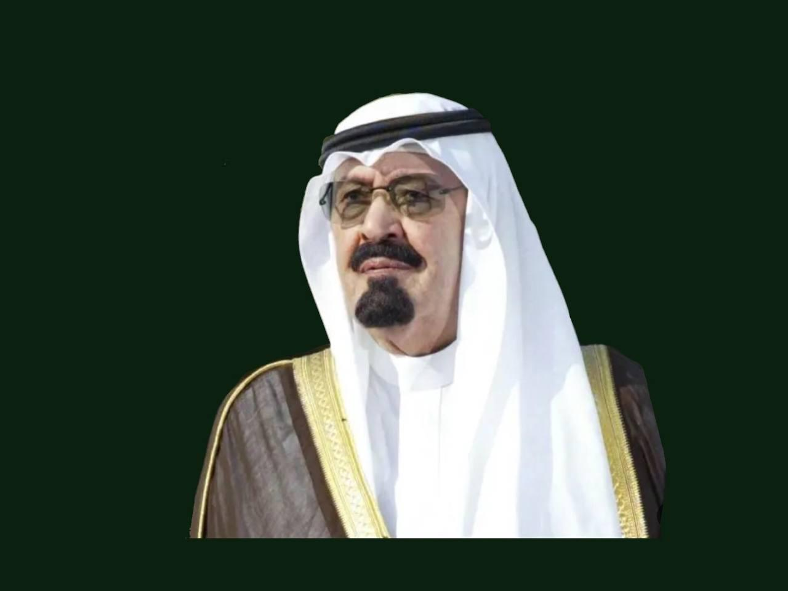

"ارضاء الناس صعب ، ولكن العدل عدل والحق حق"
عبد الله بن عبد العزيز بن عبد الرحمن آل سعود ( الملك السادس للمملكة العربية السعودية، ويلقب بخادم الحرمين الشريفين ، هو الابن الثاني عشر من أبناء الملك عبد العزيز الذكور، وأمه هي فهدة بنت العاصي بن كليب بن شريم العبدي الشمري، ولد في عام 1924م بمدينة الرياض. في عام 1995م استلم إدارة شؤون الدولة وأصبح الحاكم الفعلي بعد إصابة الملك فهد بجلطات ومتاعب صحية عدة، وبعد وفاة الملك فهد في 1 أغسطس 2005م أصبح الملك رسمياً، وبالإضافة لكونه ملكا للدولة فقد كان يشغل منصب رئيس مجلس الوزراء تبعا لأحكام نظام الحكم في المملكة القاضية بأن يكون الملك رئيسًا للوزراء. وقد صنفته مجلة فوربس في عام 2011م كسادس أقوى الشخصيات تأثيرا في العالم توفي يرحمه الله عام 2015 .
بعد مفاوضات استمرت 12 عاماً انضمت المملكة إلى منظمة التجارة العالمية بتاريخ 11 نوفمبر 2005 م في خطوة تعد تاريخية في مسيرة الاقتصاد السعودي من شأنها أن تساعد على اندماج الاقتصاد السعودي في الاقتصاد العالمي وزيادة الاستثمارات الداخلية والخارجية وإيجاد فرص عمل للمواطنين، وتضع الاقتصاد السعودي على أعتاب مرحلة جديدة الأمر الذي يعززالمطالب في الحصول على فرص عادلة للنفاذ للأسواق العالمية.
أمر الملك عبد الله بإنشاء المركز السعودي لمعلومات النانو في عام 2010 م ويهدف إلى نشر وتوعية المجتمع بهذه التقنية والمساهمة في نقل اقتصاديات الوطن العربي والإسلامي إلى مصاف الدول المتقدمة ويقوم بعمل ورش عمل، ومحاضرات لطلاب وطالبات المدارس والجامعات والمعاهد وغيرهم من المهتمين بهذه التقنية من أفراد المجتمع، أيضا يوفر المركز منتجات النانو الحاصلة على شهادة السلامة للأفراد والبيئة وشهادة الجودة أيضاً، كذلك يعمل على إنشاء جهة مسؤولة عن توفير المعلومات الصحيحة والموثوقة الخاصة بتقنية النانو.
مركز الملك عبد الله المالي «كافد» (KAFD) يقع في مدينة الرياض، وهو من أكبر مشاريعها القائمة، والوحيد من نوعه في الشرق الأوسط حيث ستصبح الرياض عاصمة الشرق الأوسط الاقتصادية، ويوجد عدة قطاعات في المركز كما يوجد أكثر من 59 ناطحة سحاب، تبلغ مساحة المركز 1.6 ملايين متر مربع، ويقع شمال مدينة الرياض، وسيكون بمقدور مركز الملك عبد الله المالي استيعاب الكثير من الموظفين ذوي التأهيل العالي من العاملين في القطاعات المالية والقطاعات ذات العلاقة، وستضم المقار الرئيسية لهيئة السوق المالية، والسوق المالية، والبنوك، والمؤسسات المالية، إضافة إلى مكاتب مؤسسات الخدمات الأخرى مثل المحاسبين، القانونيين، والمحامين، والمحللين والمستشارين الماليين، وهيئات التصنيف، ومقدمي الخدمات التقنية.
أدت أحداث المتظاهرين بسبب الربيع العربي والذي كان من أهم أسبابه الفساد الإداري والمالي إلى إنشاء الهيئة الوطنية لمكافحة الفساد "نزاهة" في 13 من شهر ربيع الأول من عام 1432 هـ وأن تشمل مهامها كافة القطاعات الحكومية ولا يستثنى من ذلك كائن من كان وأن تسند إليها مهام متابعة تنفيذ الأوامر والتعليمات الخاصة بالشأن العام، ويدخل في اختصاصها متابعة أوجه الفساد الإداري والمالي. وطالب جميع الوزارات والمؤسسات والمصالح الحكومية وغيرها الرفع للهيئة بكل المشاريع المعتمدة لديها وعقودها ومدة تنفيذها وصيانتها وتشغيلها دون الإخلال باختصاصات الجهات الرقابية الأخرى تقوم الهيئة بالتنسيق اللازم مع تلك الجهات فيما يخص الشأن العام ومصالح المواطنين وعلى تلك الجهات تزويد الهيئة بأي ملاحظات مالية أو إدارية تدخل ضمن مهام الهيئة.
حرصاً من خادم الحرمين الشريفين الملك عبد الله على التعليم فقد شهدت المملكة العربية السعودية نقلة نوعية وكمية في التعليم الجامعي غير مسبوقة حيث بلغ عدد الجامعات الحكومية والأهلية (34) أربع وثلاثين جامعة فقد اِفتُتحت (17) جامعة في عهده
مشروع النقل العام في مدينة الرياض «القطارات والحافلات» بكامل مراحله وخصصت لجنة عليا للإشراف على تنفيذه بقيمة 22.5 مليار دولار لثلاثة ائتلافات تقودها شركات أجنبية من أكبر مصنعي ومنفذي شبكات القطارات في العالم لتصميم وإنشاء أول شبكة مترو في العاصمة الرياض في مشروع عملاق سيستغرق تنفيذه خمس سنوات ليعطي الضوء الأخضر لأكبر نقلة فعلية على الأرض في مجال المواصلات الداخلية في تاريخ المملكة. ويهدف المشروع إلى تقليص الازدحام المروري وتحسين النشاط الاقتصادي للعاصمة ومن المقرر تشغيله في عام 2020م بعد أن كان مقررًا انتهاء العمل وتشغيل المشروع في يوليو عام 2018م.